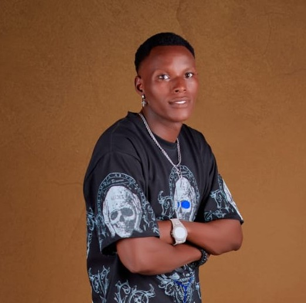

I am Fulgence Niyukuri,I graduated from SomaliBantu secondary school in the year 2021. I didn't have a chance to join college due to lack of opportunities. However, I enrolled for film and photography short courses. I am one of the founders of the Creative Arts Center and I'm passionate about digital story telling. Here at Creative Arts Center, I work as a professional photographer and videographer for our digital platforms. And I also work as photography instructor for the short programs we offer.

FULGENCE NIYUKURI
Cofounder
I am Fulgence Niyukuri,I graduated from SomaliBantu secondary school in the year 2021. I didn't have a chance to join college due to lack of opportunities. However, I enrolled for film and photography short courses. I am one of the founders of the Creative Arts Center and I'm passionate about digital story telling. Here at Creative Arts Center, I work as a professional photographer and videographer for our digital platforms. And I also work as photography instructor for the short programs we offer.